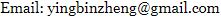

I am the co-founder of Videt Tech Ltd., Shanghai, China. I was an associate professor at Shanghai Advanced Research Institute, Chinese Academy of Sciences from 2015 to 2018 and researcher at SAP Labs China from 2013 to 2015. My personal research interests are in computer vision, especially in video understanding and scene text analysis. I received Bachelor and PhD degrees from Fudan University in 2008 and 2013, respectively.
